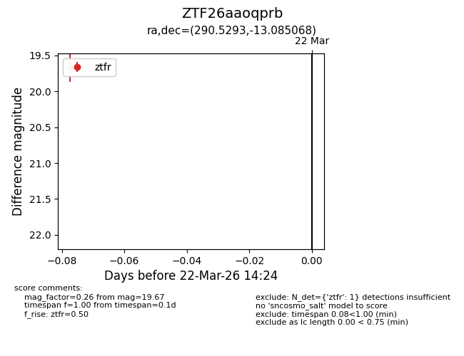
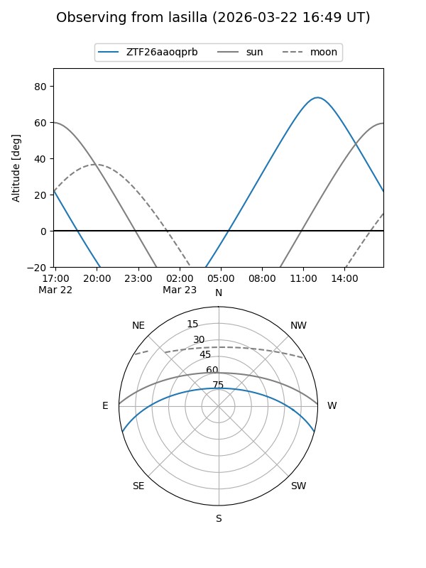
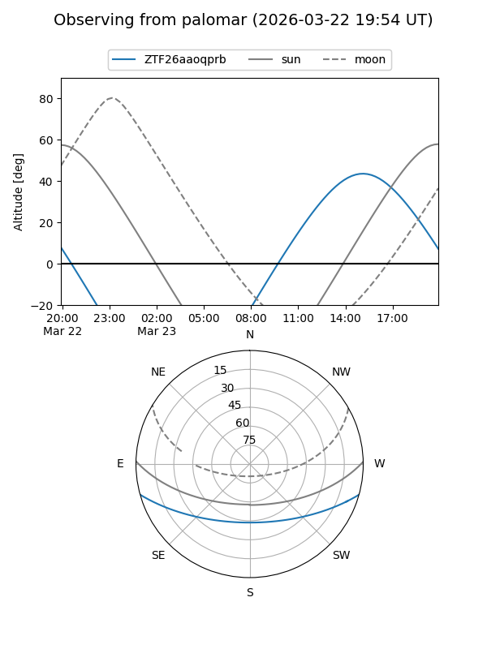

ZTF26aaoqprb
Target ZTF26aaoqprb at 2026-03-22 14:26
Aliases and brokers:
FINK: link
Lasair: link
ALeRCE: link
alt names
ZTF26aaoqprb (ztf,fink_ztf)
Coordinates:
equatorial (ra, dec) = 290.5293,-13.08507
equatorial (HMS+DMS) = 19:22:07.02,-13:05:06.25
galactic (l, b) = (24.5512,-12.64622)
Flags:
Photometry:
last ztfr=19.67
1 ztfr detections
Lightcurve

Visibility


Additional plots